My Blog
Paper is better than a screen
March 19, 2021
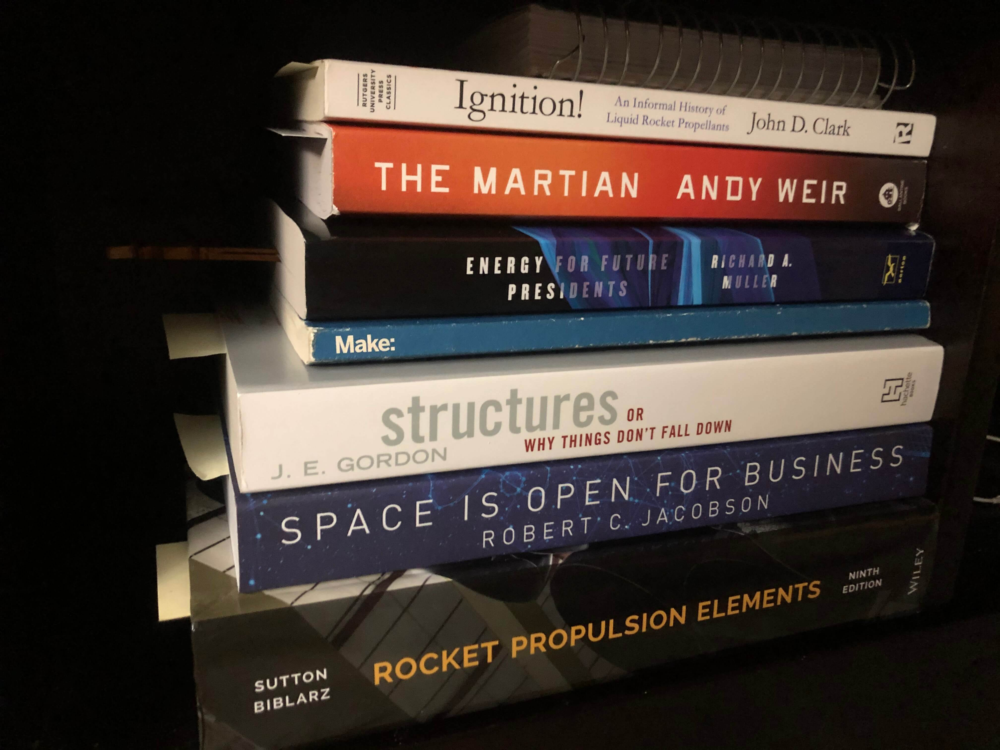
Well, to start off, my third project was never mentioned and I think I’d like to keep it that way until I make significant progress. Until then, I did want to blog about some new reads I have purchased…
Unlike many people (or similar to many people), I hate reading things on a backlit screen. Whether that’s an article or an entire textbook, it simply isn’t as productive for me to stare at a screen. I know this sounds a bit cynical for someone who’s majoring in Computer Systems Engineering and will likely spend a majority of his life in front of a computer, but reading in general has personally always been more effective when it’s in the form of paper. Now, the reason I bring this up is due to the large amount (by my standards) I’ve recently spent on Aerospace, Mechanical, and rocketry books.
My original goal was to raise my competency in engineering to hopefully be able to pursue more complex / useful projects. This urge seems to have developed due to my relative inexperience in Aerospace engineering. As I’m involved in several Aerospace clubs, I often find myself chatting with other club members with a decent amount of Aero jargon. While I was able to learn a good amount from simply talking with senior/junior Aero majors, I also thought it to be best to really understand different engineering concepts not covered within my major (as a decent portion of engineering is non-intuitive). Some of these books may change my outlook on the world while some will enable me to solve more complex problems, but regardless, I’ll try to discuss any interesting things I read about in this blog.
So far, the most interesting thing I’ve read about is the fact that solar thermal energy can be more efficiently converted to electrical energy than the photons of sunlight (solar panels).
Blog Revamp 2: Autonomous Mapping Drone
March 4, 2021
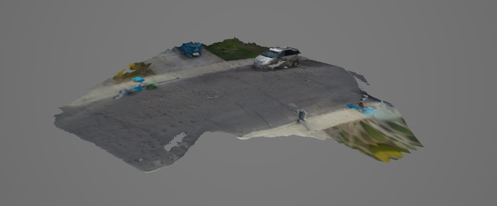
Today was one of my last midterms and I can almost certainly say that I am not happy. The class I’ve taken this midterm for is a digital design class in which we go over different computer architecture design while using Verilog to program FPGAs. The class content is actually rather interesting as we learn more than what was stated in the course syllabus, but I also understand that this comes at a price. For students (such as myself) who rely on lectures for test prep, this doesn’t necessarily benefit exam preparation. This honestly brings up the whole argument of knowledge vs grades, but I digress to perhaps try and answer this question another time. On a more positive note, let me discuss the second project I have made significant progress on these past couple weeks.
My second project is regarding developments I have made towards my 5 inch quadcopter’s capabilities. Originally, I had made my quadcopter to simply behave as a typical racing drone tuned for performance. I would spend hours on the drone simulator to make myself proficient enough to fly my quad to hopefully use it as another hobby to pass time. Turns out that I was able to accomplish far more than what I originally hoped. After reconfiguring the software running on my drone and adding some hardware, I was able to get my drone to fly GPS waypoint positions, hold its position, and auto-land. For anyone who isn’t surprised, I would suggest that you should be. Not necessarily because of my accomplishment, but rather regarding the simplicity for civilians to have access to this kind of tech. Drones are a very controversial topic when it comes to aviation and the FAA, and when it’s this simple to give a drone these autonomous capabilities, it gives you the chills as to what could happen if these drones fall into the wrong hands.
In addition to the GPS autonomous capabilities, I was also able to use my drone to map out different locations (all using open source software). All I had to do was attach a downward facing camera which took pictures every fraction of a second, compile these photos into an orthomosaic software, and viola, I get relatively accurate 2D/3D maps of different locations. The orthomosaic software is able to create these maps with image data alone by simply comparing similar features between images and meshing them together. This project truly shows the power of open source software. I will likely continue developing this project and may find some good applications for all the capabilities my 5 inch racing drone has.
My third and most recent project update will come tomorrow...
Blog Revamp: GPS/IMU Fusion
March 3, 2021
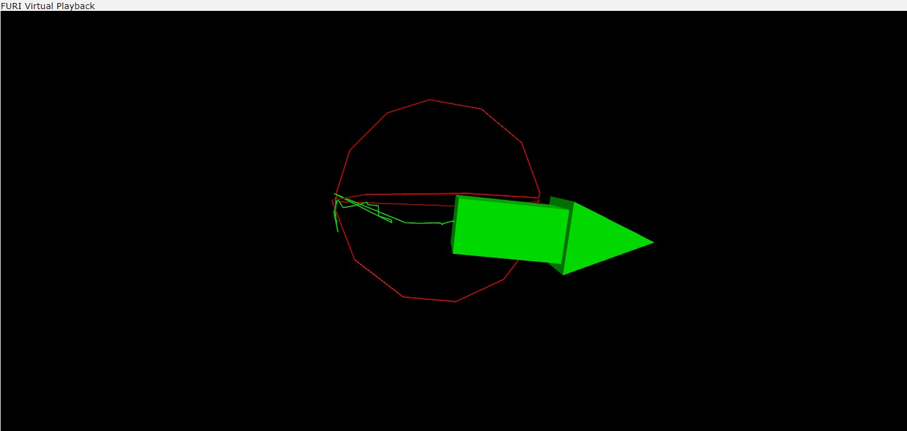
Just recently, I was working on some last minute college applications which got me thinking… If I’m writing about myself for college essays, I may as well get back into blogging. Although I try to keep this blog as little of a burden as possible, I’ve honestly liked to just spew unorganized thoughts and ideas. Ironically, this helps me organize my thoughts and ideas so with nothing further to say, here it goes…
For the past couple months, I have made significant progress in several projects and have thought up some really clever ideas on the way (‘clever’ according to me). I honestly am not sure if some of these ideas are already implemented in industry, but I digress.
The first idea / project I had come up with incorporates GPS + IMU sensor fusion. To solve the problem of the extraneous gaps in positional / velocity data between GPS samples (which are quite large), I had thought to use a cheap IMU board (MPU6050) to be able to acquire the accurate position of a device at any given moment. The idea is quite simple and was one I was planning on incorporating in my research project. IMU data can be used to update device position between GPS samples while IMU data can be refreshed every GPS sample. This helps deal with the integration / drift error commonly associated with any IMU. The end goal is to be able to place this project within a high power rocket to accurately track the trajectory of a rocket (and be able to virtually reconstruct the flight).
Other project updates tomorrow...
The End of Fall COIVD Sem
December 13, 2020
After summer break, things picked up quickly. Classes began assigning assignments and lectures became technical. The workload of college was present, but the excitement of attending college diminished. As it didn’t make sense physically going back to college in the current state of the world, I set up my virtual classroom at home.
Initially, It was nice to have the commodities of home while still attending classes virtually, but this perspective quickly wore off. I realized that a virtual education is nowhere as good as in person hands on learning. However, rather than complaining, I strove to find a solution to this. Luckily, I’m in several clubs and decided to apply some of my virtual classroom knowledge into some of the projects I’m working on with my clubs. For example, since I am taking a data structures course this year, I have the unique ability to review the python code I’ve already written for Sun Devil Rocketry’s GUI program and enhance its efficiency and ability by implementing new and different data structures. By applying skills learnt in the classroom on useful projects, I was not only able to progress projects more efficiently, but also able to reinforce my understanding of certain concepts.
While club projects progressed this semester, I had little to no time to work on my personal projects. Club projects and my internship took most of my free time every week and thus, I decided to hold off on personal projects development until breaks. With finals over, I am looking to complete and make progress in some of the personal projects I am keen to work on including: building a quadcopter, getting my GPS waypoint controller to work on a ground vehicle, improving my dorm door lock, developing the ASU confessions page, and more…
I’ll be making more updates (mostly for myself) to keep track of the progress I’ve made, but if you have somehow found your way to my blog, welcome :)
The Conclusion of Summer Break
Project Updates, August 18, 2020
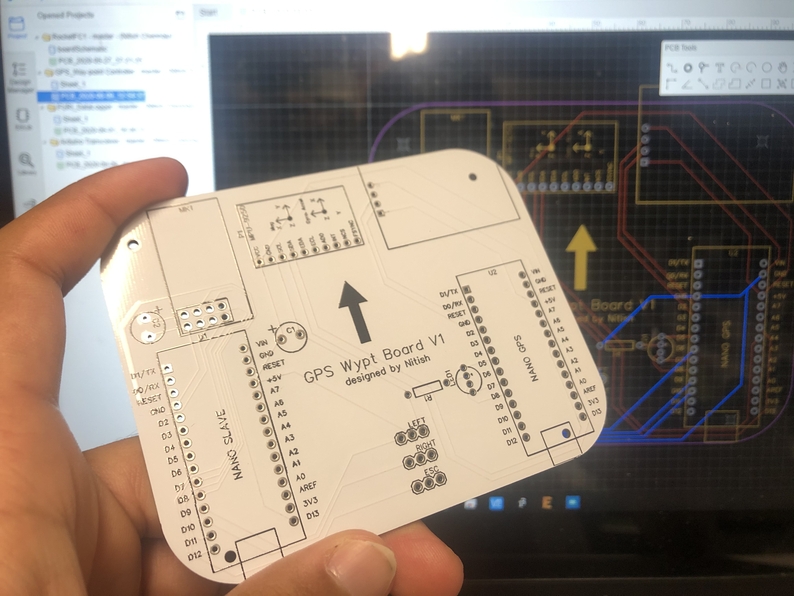
It’s been a while since I’ve made a blog post and the world has kept getting weirder. For starters, school starts for me on August 19th, so the official end to my summer is quickly approaching. Secondly, after corona has hit, a number of natural disasters hit our lands as well. There was also the explosion of Ammonium nitrate in Beirut. The BLM protests have taken place. And much more… With this year’s problems forcing everyone to stay home, I decided to make the most of my unfortunate time at home make some decent progress on my projects.
There are a series of projects I have had the chance to work on and have made some rather significant progress in all. For starters, my first printed PCB’s have arrived. They include a data logger, gps waypoint controller, ardurocket flight controller, and a telemetry receiver. All those boards work exactly as designed and enabled me to gain experience with PCB design. Additionally, it helped me to compact and professionalize my electrical projects. The datalogger boards will be used for any testing / data collection projects. The GPS waypoint controller will replace the combination of two boards on my Autonomous Foam boat. The Ardurocket flight controller will neaten wiring inside of the rocket + save mass. And the telemetry receiver will simplify the hardware required for my GPS UAV ground station.
In addition to PCB design, I have applied my newly gained knowledge on networking to upgrade my IOT Surveillance camera to send a message to my home linux machine. Once my home linux machine receives this message, it plays an audio greeting with the time and temperature. While there is a lot of potential for this project, I have benched this project as a result of the school year coming to a start.
In respect to more organization based projects, Sun Devil Rocketry, as a whole, has made significant progress on its liquid engine this summer. I personally have near completed the GUI interface between the control avionics / data acquisition boards and have now shifted my attention towards electrical hardware. As a result, the liquids avionics team is making excellent headway considering in-person meetings are not possible.
Lastly, I wanted to spend the last few words detailing my sudden appreciation towards the men and women who worked on spaceflight during the space race. Over this time between my blog post, I have gotten to read books about several astronaut's journeys. Some of which went to the moon, and others which ended in a catastrophic fireball rushing towards the ground. This long standing history of rocket science being hard and humans still having the grit to continue with the development of their technologies inspires me. From the stories of rocktry’s past I have learnt one thing of human nature: It is only human to seek out challenges and explore the unknown. With that note, I would like to add that I hope I will continue to find time to write more posts (mostly for myself) as virtual classes start.
Square-Wave Inverter
Inverter Project, July 23, 2020
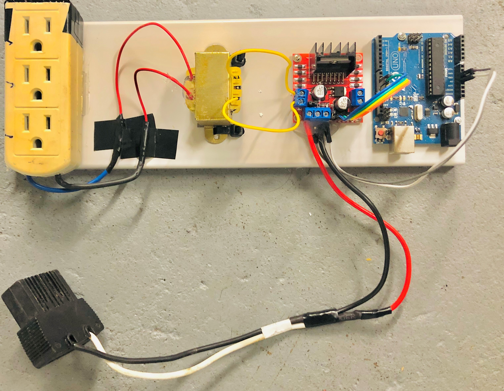
A few days ago, the unexpected had happened. While me and my family were watching TV one night, we saw some bright flashing outside and all of a sudden, the lights started flickering and finally all went out. This was a clear indication of a power cut. Weirdly, it wasn’t very windy at the time so, initially, we assumed the power would come back after a few seconds. Much to our disappointment this did not happen. After a quick inspection outside, we could see that the whole neighborhood went dark. This meant we had to fetch the lanterns and flashlights in the garage. With the power out, we had no wifi, no lights, and a very scarce cell tower signal (only enough for calls + texts). It is quite surprising how powerless we become without the advent of electricity. By the time the electricity came back, it was morning which meant 7 hours of no electricity. After browsing some of the neighborhood chats, it became clear that the source of the powercut was a tree branch falling on a power line.
At this point, this issue got me thinking. Typically, during any storm or severe weather, a similar situation could have arisen and taken much longer to resolve. As a result, it makes sense for all families to be prepared for such an emergency considering much of our lives are dependent on electricity. This led me to begin development on a cheap and simple inverter. An inverter is a circuit capable of modifying DC current into 120v (or 220v depending on where you live) AC to power general home appliances. The catch here lies within the shape of the AC signal produced. Many cheap inverters produce what is known as a square wave. This is a problem for high tech appliances due to the square wave having the capability to heat and damage these electronics. For all appliances to work, a smooth sinusoidal wave is desired.
With the desired waveform in mind, I set to work with initially getting the inverter concept to work. To do this, I set out to build a square wave inverter. To begin, I needed to determine a way to first generate a low power square wave AC signal (target 12VAC). From an old 12v battery lying around, I had a 12VDC power supply. Using this, I thought up something clever. There exists a L298N motor driver IC which you can buy for very cheap online. The motor driver is wired in an H-bridge which means the motor driver can driver a motor both forward and backwards (via reversing polarity to the motor). Since this concept can effectively generate an AC signal, I simply attached a 12VDC power supply and programmed an Arduino to change direction of “a motor” at 50Hz. Voilà, I am able to generate a 12VAC signal which I can then step up with a transformer. Since the transformer I am using is meant for lower power applications, it can only output 5-10W based on battery charge. Although not enough to power a large appliance, I am able to light up an 8W LED which proves that this concept works.
I will continue to further develop this basic inverter to power higher power appliances and also produce closer to a sinusoidal wave...
Code Optimization w/ Prime Numbers
The power of primes, July 9, 2020
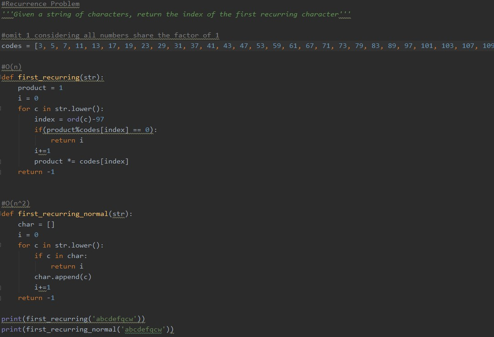
As the corona virus continues to dominate and alter everyone’s typical lifestyle, I was subject to this and am still unable to find a suitable body of water to test my GPS waypoint boat. Consequently, I decided to take a look at a couple algorithms classes online in order to identify where I could optimize code. I was taking a look at a couple interview coding problems which where relatively simple in nature: sorting, recursion, …, but one question in particular caught my attention mainly due to an intuition I had into solving the problem.
The problem itself is very simple. It is a first recurrence problem in which the programmer is asked to find the first repeating element in a string or array of characters. The most basic method to solve this problem involves simply iterating through the array or string, searching a dictionary or array whether an element is there, and storing the character if not found in the dictionary or array.. In the method defined, the big O notation of the method is O(n^2).
After some consideration, I have determined a method to reduce the run time of the program to be linear (O(n)). This method involves the use of assigning prime numbers to a character. This is done via a predefined array of prime numbers. By then converting our characters to integers, we can assign each integer to an index number of the prime number array. Now, when the array or string is iterated through, the prime number assigned to each character is multiplied to a product integer. Using this product, we can tell of the first recurrence of an element by checking if the product is divisible by the corresponding prime number.
A picture and link to the code is above...
Autonomous Boat Project UPDATE
Almost ready to float, June 29, 2020
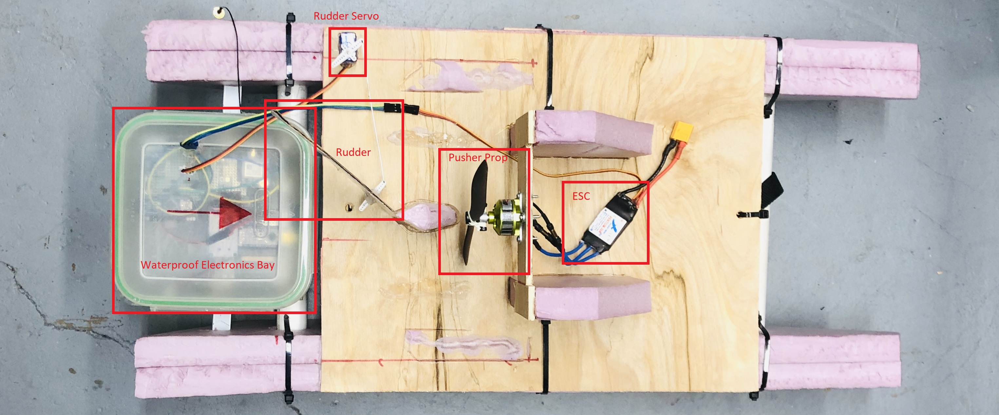
Since my last post, quite a few things have happened to my GPS controller and boat hardware. At the time of the previous post, both the GPS controller and both were being developed separately. Over the past couple days, I have gotten both to work interdependently while encountering a few issues on the way. First of which was the fact that my airboat had no steering. There are several ways to steer an airboat, but I had decided to keep things simple and simply placed a servo controlled rudder behind the pusher prop. I had also made significant changes to the GPS controller while understanding my software better:
- Software Serial Library (library used to get GPS data from module) messed with Arduino’s internal clock. Resulted in unstable PWM control.
- SD card module takes too much space on arduino (omitting SD card logging for first tests)
- Digital Pin IO was fully functional
- Multiple waypoints can now be programmed. GPS controller new LED code:
- BLINKING GREEN -> Waypoint found
- BLINKING GREEN (fast) -> Last waypoint found (terminates program)
With unstable PWM control, the GPS controller would not be able to control a servo or brushless motor esc. However, it was good news that Digital IO still was functional. This enabled me to think up the most convenient solution: using multiple arduino boards. Lucky for me, I had my Arduino Flight Controller 2.0 board not being used in any project. The best part about this was that the flight controller had all the inputs and outputs required for arduino to arduino communication + 3 PWM outputs.
The arduino - arduino communication was very simple. Three GPS controller digital IO pins were connected to the other arduino’s analog pins. This meant, the flight controller 2.0 could detect when the GPS controllers Digital IO pins were high or low. With this, I had a sort of binary communication code to control the boats movement:
- A0 HIGH -> MOTOR OFF
- A0 LOW -> MOTOR ON
- A1 HIGH -> TURN RIGHT
- A2 HIGH -> TURN LEFT
- A1 LOW && A2 LOW -> STRAIGHT
After manufacturing a couple connectors, the arduinos were interfaced with the boat. Now that the boat is very close to its first test, I had taken on the task of waterproofing and upgrading the GPS antenna. All electronics are in a plastic waterproof tupperware container at the back of the boat. I have also purchased a batter GPS antenna and am waiting for its delivery.
Stay tuned for updates regarding my first waypoint mission...
Autonomous Boat Project
New Project, June 23, 2020
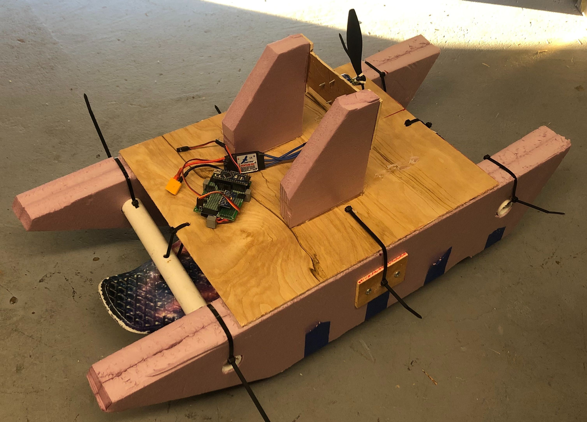
For an entire year, purple insulation foam boards cut into the shape of a flying wing have been resting in the family shed not being used. After dusting the foam boards and inspecting the material, I had a thought: to build an autonomous boat capable of GPS waypoint navigation. This project will not only be a good way to pass time during Corona, but also a great way to make progress on my UAV flight controller. The autonomous boat platform makes a great testing platform for GPS navigation mainly due to:
- Its slow speeds
- 2 dimensional range of movement
Consequently this project will be a fun and useful build. The only problem now is to find a body of water in which it can be tested in.
The autonomous controller consists of two main components for navigation:
- Magnetometer (compass)
- GPS
The controller uses the 3 axis MPU9250 board to act as a compass with tilt stabilization and the GPS to determine its location and its next waypoint. Luckily, the tilt stabilized compass code was on an instructable and simply had to be calibrated to output heading. This heading was then compared to the heading required to reach the waypoint. With this method, the controller is able to print whether to turn left or right based on the current direction it is facing. To summarize, I have built a functional GPS waypoint controller.
Some problems I am facing with the control include:
- Running out of memory on the Arduino
- Not being able to log location data onto an SD card
- Inaccuracy of the GPS
All problems will be addressed and hopefully solved before my first test.
ASU Dining Hall Selector
Program Complete, June 15, 2020

The ASU Dining Hall selector is finally complete and now incorporates all the improvements detailed in the previous post (just below). The most apparent change made to the program is the layout and design of the emails being sent. Open dining halls are indicated with a green header and closed dining halls with a read header. The menu content is still formatted the same as the original version with the item name followed by the description. All in all, the overall look of the email greatly improved readability. While the emails look perfect on the gmail web interface on my laptop, things are a bit different on the mobile gmail app and apple mail. This will be a problem I will attempt to address over the next couple days.
Additionally, the program is now capable of selecting an optimal dining hall based on your likes and dislikes. The system I am using is relatively simple. It determines the best dining hall by a points system. Here is how dining halls score points internally:
- 1 pt if OPEN
- 1 pt for keyword match with LIKES array
- 1 pt for keyword match in description with LIKES array
- (DISLIKES are omitted entirely from list)
All LIKED and DISLIKED foods are kept track of via internal lists.
An obvious next step for this project is making it easily accessible to the students of ASU. I am planning on having the program linked to this website somehow, but details aren’t finalized.
Click on the image to view the github repository with code for this project...
ASU Dining Hall Selector
Program UPDATE, June 13, 2020

Back before the pandemic, I had enrolled for an unlimited meal plan for the entirety of my freshman year in my college. As a result, I had to use dining halls spread throughout campus for my meals. The Tempe ASU campus had four dining halls with each dining hall having different items. Because all dining halls did have different items, there existed the problem of being served food you don’t like. One way to avoid this is by checking the online ASU dining hall menu for each of the restaurants before eating a meal, but this task is needlessly complicated. The dining hall website loads to the next day lunch on default and needs to be set to the current day and meal. As a result, it is tedious to search the menu before each meal. This led me to have the idea to create a program which returns the optimal Dining hall to go to based on your food likes and dislikes.
The program is not complete, but currently performs most of the requirements of the program. The program is currently capable of scraping the Dining Hall Menu website, removing menu items with certain keywords, and emailing the new menu list to the user at a specified time. The current program can still be improved in the following ways:
- Email Layout (more appealing)
- Keeping track of all favorite items
- Choosing Optimal Dining Hall
Above is an image of the plain text email being sent (with minimal styling)
(the image does not link to anything, code will be published soon)
Garage IoT Door Lock
Fitbit IoT Lock Control App, June 6, 2020
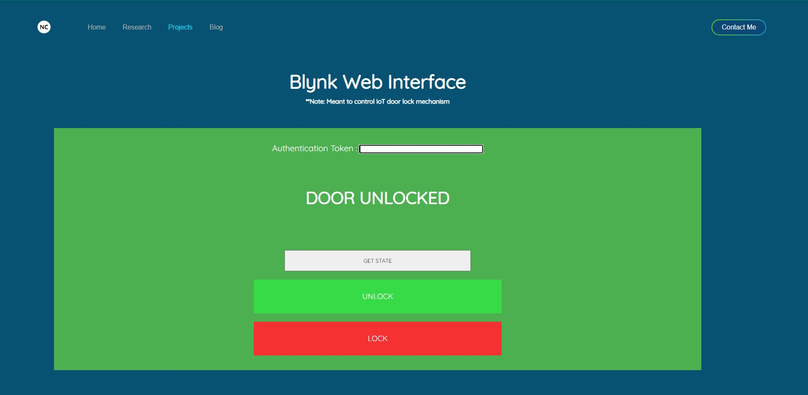
On the theme of developing projects regarding my original dorm lock, I have decided to solve the problem of not being able to operate the IoT door lock from my computer. I approached this problem by designing a webpage which extends this personal website to control and get information from Blynk virtual pins. As a result, the IoT door lock device can be controlled via any webpage. All that is required for the web page control is to type the Blynk authentication token into the textbox.
Click the image above to access my Blynk Web Interface...
(you can also access the Blynk web interface from clicking on the IoT Dorm Lock Card in the Projects Tab)
Garage IoT Door Lock
Fitbit IoT Lock Control App, June 6, 2020
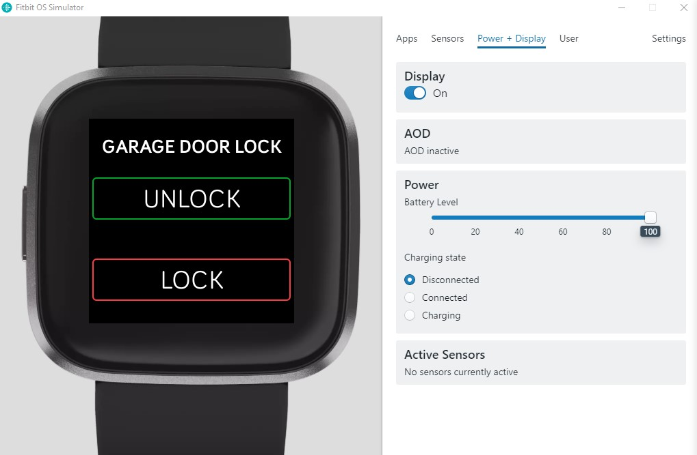
The IoT dorm door lock mechanism was the first project I had made which successfully incorporated the IoT platform. Although being my first project, this project has been the most useful project in daily life during my days in my college dorm. Now that I have been home awhile, I have decided to re-equip my project to serve use once again. Considering that I have converted my family’s garage into my workshop, I find myself using the garage more and more. As a result, it made sense to automate the garage door’s lock to make it easy to go in and out of. For the mechanism to work, I have made a makeshift mount for the servo (due to the lack of having a 3D printer) and have connected the servo to the same board as used for my dorm’s lock. While I was in the process of equipping the lock, I had decided to upgrade its accessibility in a sense. Considering that I had gotten my first taste into making fitbit apps, I have successfully developed a fitbit app capable of sending web requests to unlock and lock my garage door. This fitbit app works alongside IFTTT webhooks services to provide a similar interface with the garage lock on my smartwatch. An image of the app is shown above.
Click the image to learn more...
Sun Devil Rocketry Liquid Engine GUI
Smart launch system, June 5, 2020
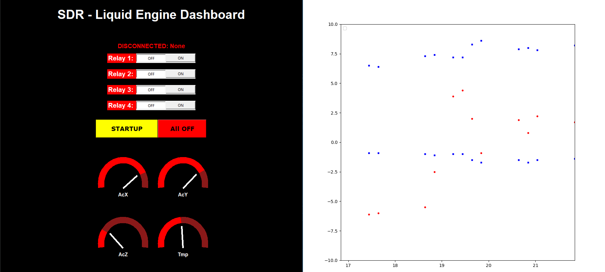
During the past few days, I have shifted all of my attention towards making an interactive dashboard GUI for the switch box which will be controlling the experimental liquid rocket engine being developed by the Sun Devil Rocketry club. As part of this, a new functionality has been added to the program. Originally, the GUI only provided an interface to communicate with the relays on board the switchbox. As of now, the GUI can now interface with 2 arduinos (1 part of the switch box and the other part of a data logger unit logging sensor data). The data logger arduino output is shown in the form of a gauge. The current layout of the GUI is as shown in the image above.
During the design of the GUI interface, I had noticed that all the gauge libraries online were designed quite a long time ago. As a result, the layout and design of the gauges suffered the most. To solve this issue, I decided to make my own Gauge class which was much more visually appealing than its older ones. Although it is a rather simplistic design, it enables the gauge to be small and still readable. An image of this gauge is shown above thi blurb.
If you want the source code for the gauge, feel free to click on the image... (Link to my github)
Designing PCBs
Prepping the PCB order, June 1, 2020
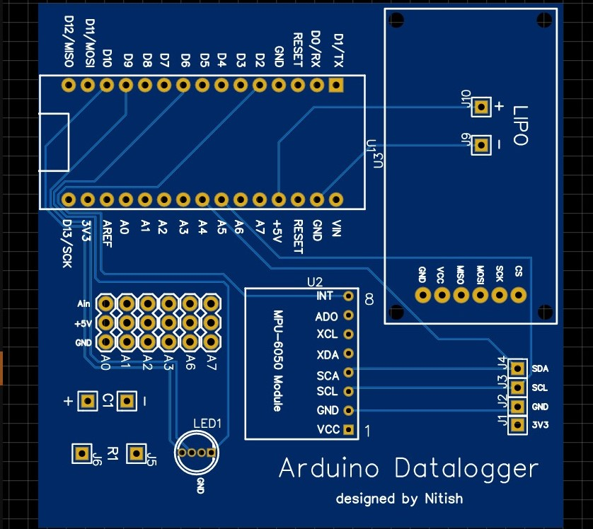
In the previous post, I mentioned how excited I was about spending my undergraduate research stipend money on purchasing components for my projects. Disappointingly, it will be a while before any purchases can be made. A large part of this is due to my misunderstanding of how parts can be purchased. The part in discussion regards the PCB I have designed for my ardurocket. Since the manufacturing process for the PCB is so cheap, it turns out it costs more to ship the PCB that it takes to actually manufacture them. As a result, I had decided that it makes more sense to turn all my projects boards to PCBs and get them all printed at once. Here is the list of boards I am hoping to have printed as PCBs:
- Ardurocket Flight Computer
- FURI Arduino Datalogger
- Flight Computer 2.0
- IoT door lock Controller
As of now, two of those boards have been designed and are ready for upload. The most recent one which was finished is the FURI Arduino Datalogger. Although this is technically part of my research project, I find the Arduino datalogger to be useful outside of the research I am conducting. I used the same board to record windmill data before taking it down.
My First Paycheck
and project updates, May 28, 2020
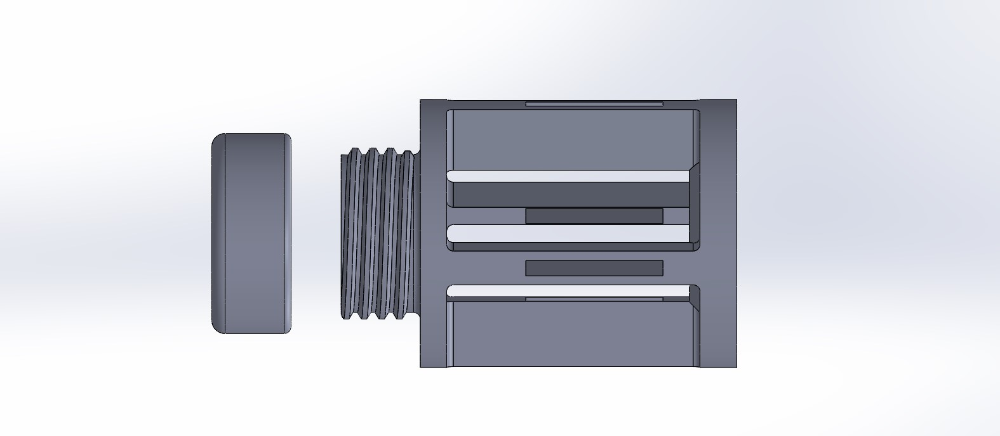
Rather good news comes from today. As a result of my undergraduate research, I received my stipend check which will mark my first pay day in my life.
Also something to note positively, I have made rather significant progress on 2 of my projects. The first of which is the Ardurocket. The Ardurocket is nearly ready for launch in terms of the rocket. The fins for the rocket and its stabilization module as well as the gyro stabilization code is all complete. All that's left to do is epoxy the fins and motor mount onto the body. Quite amusingly, the 3D printed motor mount I designed was actually about to be thrown out. I had managed to thread the cap for the motor mount so tightly that I had never bothered to even try to get it off until today. Whilst using proper tools for the job, I had realized a small chip of PLA managed to lodge itself between the threads which completely locked up the threading. After removing the debris, the thread finally worked as designed (flawlessly). After being printed nearly 4 months ago, the print finally worked as intended putting my rocket on the right track. Another issue I need to sort out is the launchpad situation. Considering that I left the larger bits gear with the movers, I am left with no launchpad. I will likely end up buying one.
Another rather interesting development I have made regards the IoT surveillance camera again. I was ruminating about the concept of the surveillance camera and realized its immense similarity with the Ring doorbell. The Ring door is useful and all, but has this annoying subscription which enables you to save footage. The subscription is based on monthly payments which doesn’t quite add up when you consider that the doorbell hardware itself was a whopping $150. To address this issue on my surveillance camera, I decided to simplify my image storage solution. I have now added the capability for the IoT surveillance camera to automatically upload its images on a local computer everyday at 11:59pm. Each folder of images is now marked with the date of when the images were taken which gives me easy access to the images whenever I want.
Click on the image to learn more about the Ardurocket Mark 2...
Ardurocket Mark 2 Developments
Rocket developments, May 27, 2020
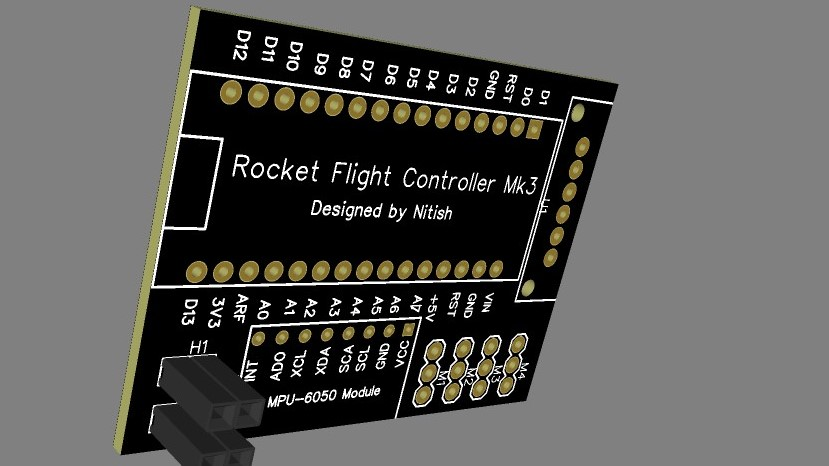
On this day, I had the chance to work on my Ardurocket Mark 2 and was able to do two things that are relatively significant. First of which includes making fins that fit in the slots of the motor mount. The fins still need to be painted and epoxied onto the rocket, but complete the rocket’s look. The second development I had made was redesigning the flight controller PCB. With a new printed PCB, the avionics inside the rocket will be lighter and smaller which will benefit the rocket’s flight. The image above is a picture of the PCB which will serve as the flight controller for the Ardurocket Mark 2.
Click on the image to learn more about the Ardurocket Mark 2...
Python Email Modules
Adding email capabilities, May 26, 2020
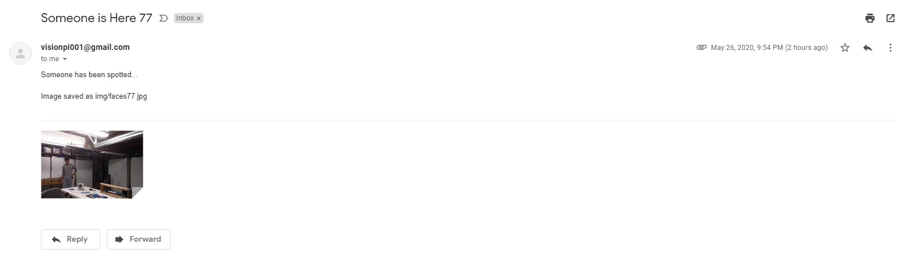
On this day, I was able to experiment with the python email modules ssl and smtplib. As a result of learning to use these modules, I was able to upgrade one of my previous projects while also creating a fun little project to test my understanding. The first thing I was able to do was incorporate the automation of sending emails into the IoT Face Detection Surveillance Camera. Originally, the face detection camera simply took pictures of any faces detected by the camera. Following the termination of the program, all images were uploaded to a local linux machine via a shell script. The problem with the current surveillance camera is the inability to easily access the pictures taken by the camera. As a result, it only made sense to give this camera email capability to turn the Iot Face Detection Surveillance Camera into something more relatable to a Ring Doorbell. As you can see in the image above, a new email is sent every time a face is detected. Each email includes the picture of the person detected along with the file location of the image.
With one program incorporating the new skill of sending emails, I decided to make a somewhat fun program to test if I really knew how to use the email module. Since the email module gives python users the power to automate emails being sent, I thought that it could be childishly abused by spamming emails to anyone’s accounts. As a result, I had made a simple program which spams a target with the same email a certain number of times. This program is still to be improved to send random text blurbs and memes to a target.
Click on the image to learn more about the IoT Surveillance Camera...
Windmill Project UPDATE
Actually harnessing the wind, May 25, 2020

In the past couple days, I had the chance to put my windmill to the test and actually collect windmill data by using the data logger I had made as part of my Fulton Undergraduate Research project. I collected voltage and current readings and was able to compare the logged data with wind speed data found on willyweather. With the following data, I was able to determine two things: 1) the windmill operates optimally when facing North (could only vary direction by 90 degrees) 2) the windmill is optimal with 4 blades at an angle of about 30 degrees. With the data collected, I was able to determine that my windmill design is capable of producing an average of 3v. This means that with a 3v to 12v boost converter, the windmill will be able to sufficiently charge a 12v battery, power an inverter, or both to enable wind energy to be stored in a 12v battery and be delivered in AC to power appliances.
Unfortunately, as a result of high wind speeds in the past couple days, one of the blades of the windmills snapped off which meant that I had to fall back on the 2 blade design. The current crude method I am using to mount blades on my windmill, is by inserting a smaller PVC pipe into a larger PVC pipe. This method enables blade angles to be adjusted easily as well as swapped out by need. Since I had to saw my smaller PVC pipe in half to enable this fit to work, a large amount of the structural integrity of the pipe was lost. This is what I believe is the cause of the blade breaking at high wind speeds. The windmill has been taken down due to the risk it poses, but improvements could be made.
Additionally, as an update, the IoT Watering System Project has been officially completed due to implementation not being an option. Since the current watering system in place requires 7 valves to be toggled, it would mean purchasing 7 relays. Since there is no real need for this solution, I have determined this project to be finished in its proof of concept state.
Click on the image above to view the CAD models of my windmill design...
(Irrelevant sidenote, excited for the spacex dragon capsule crewed launch)
Windmill Project
Harnessing the wind, May 18, 2020
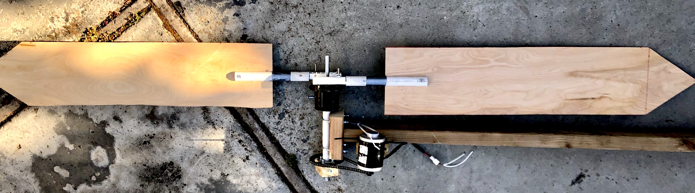
So, I have a little bit of a failure story to tell. When I was 10 years old, I bought an awesome electric scooter. (Sidenote, “awesome” was pretty much the extent of my vocabulary back then). Ever since I have gotten my scooter, I have longed to take it apart due to my craze of converting my electric scooter to a mobility device in the form of a car. Unfortunately, I have not gotten that chance until 8 years later when the 24v battery in the scooter stopped being able to retain charge. At this point, I had given myself the green light and developed a go-kart out of the materials at home. This meant a very heavy chassis which required a ton of torque to be driven.
My first iteration of the gokart combined parts from the old electric scooter and an additional old power wheels corvette car. This resulted in the first iteration of the gokart being very heavy and unfortunately underpowered. The motor was from the electric scooter and was built only to run at 3 - 10mph. Cleverly, the electric scooter was built with a safety mechanism which only ran the motor if the scooter was moving at a speed of 3mph. With this safety mechanism, the scooter company didn’t have to account for the large power drawn from getting the motor from standstill to 3mph. As a result, the motor was relatively underpowered for what I was trying to do. Unfortunately, even after some very clever engineering mechanisms were built, the “gokart” was underpowered and struggled to move with any load on it. As a result the whole project was scrapped and led me to come up with the project I am working on now: a diy windmill.
When I was in 7th grade, I had participated in a wind power harnessing challenge as part of the annual Tech Challenge (hosted by the Tech museum), I had learnt a decent amount about windmill design optimization. While there was only so much I could optimize with limited materials, I set out to build a somewhat modular windmill capable of spinning the motor from the electric scooter. As many know, motors can be used as electrical generators due to the rotating magnetic field generated by rotating the motor shaft. As a result, I had to simply spin the electric scooter motor to generate electricity. After 2 days of solid work, I have developed my first solid iteration (picture above). To begin, all blades of the windmill are modular. Each windmill blade is a piece of plywood mounted to a pvc pipe with a slit which makes it easy to manufacture. Additionally, each blade angle can be changed by hand to match wind speeds. Lastly, the blades can be swapped out entirely with a new design to further assist with optimization. While I haven’t powered anything with this prototype wind turbine, I have measured that this turbine can consistently produce a stable 3V with relatively calm winds (5 - 7 mph). Eventually, I will step this up to do something usable. Until then, I will continue to post updates on this project (as well as my other unfinished ones).
Click on the image to get an enlarged view of my thrifty engineering...
Update to Dorm door lock
Dorm Door lock code UPDATE, May 16, 2020
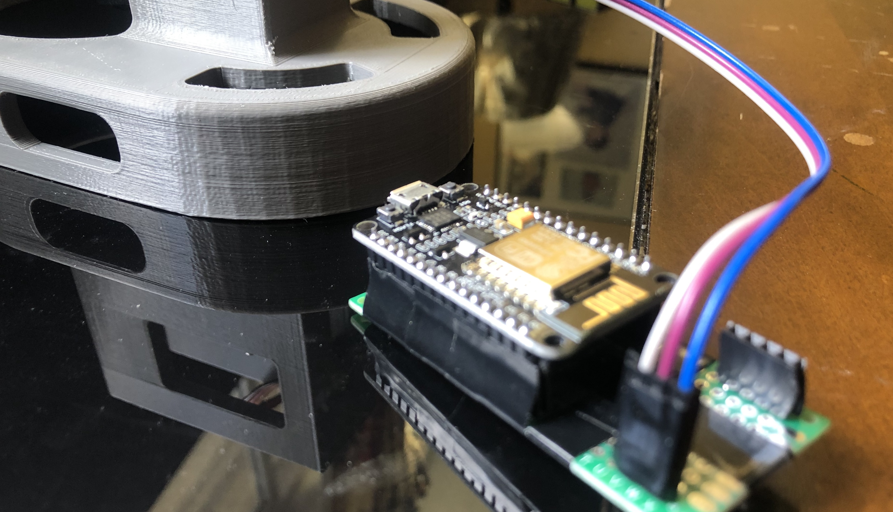
I have finally received my circuitry from my dorm and have finally gotten the opportunity to check in on the status of all the projects I had left behind before the pandemic started. As a result of testing all my projects, I had decided to make some improvements to the current dorm door lock in order to enables the servo to spin freely when not being used. This will enable to lock to function from both the app and also a key being turned manually.
My First Fitbit App
Fitbit Versa 2 Battery Clockface, May 12, 2020
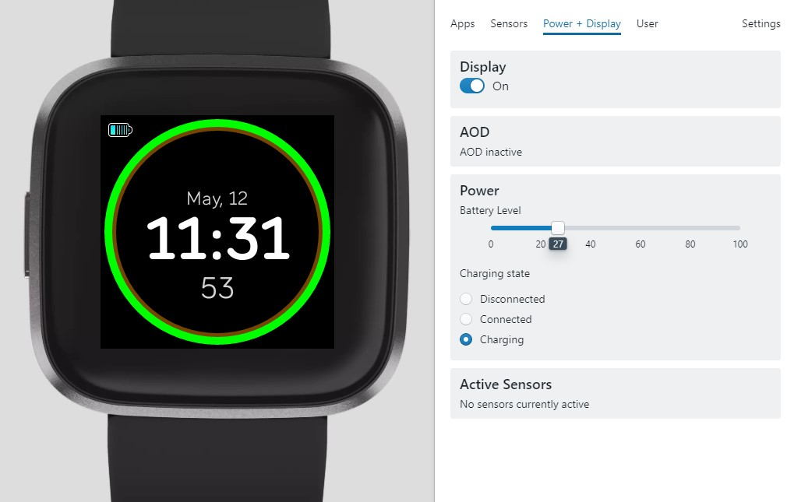
A couple days ago, I called movers into my dorm room at Tooker house to move my stuff out. As a result, I had gotten the opportunity to ship a couple useful components back home to continue my projects. In those boxes that are being shipped home are a ton of electrical equipment which will enable me to interface the raspberry pi watering system with my house’s valve control system. While I am waiting for those boxes, I had decided to try my hand at something completely irrelevant to what I am working on: creating an app for my fitbit versa 2.
Considering that my daily wearable is the fitbit versa 2, I had decided to get to know it a little better by making apps from it. To start simple, I set my sights at making a very basic clock face which solved a rather simple problem: indicating the battery of my fitbit. Since I had always found it annoying to open up a seperate app on my fitbit to check the status of the watch’s battery, I thought it would be simpler to have it displayed on the clock face as a color; Presenting to you the battery -clock.
Click on the image card to download or view the clock face...
IOT Smart Watering System
Version 1 Summary, May 9, 2020
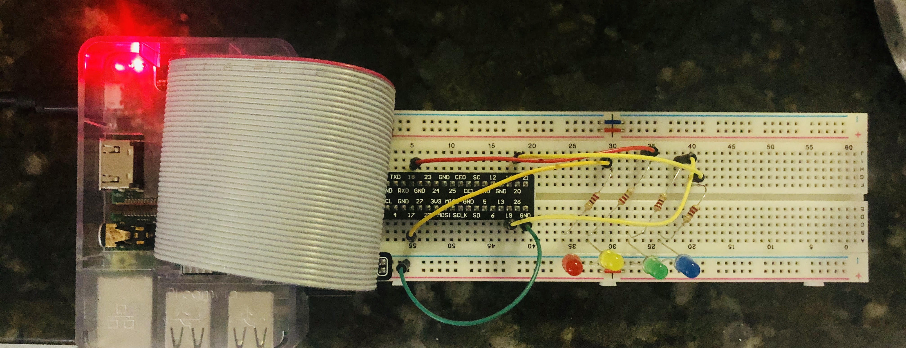
As of 2 days ago, I have successfully completed all my finals at ASU and finally had the chance to begin developing new projects to work on. Being at home with only a raspberry pi 3 at home came with its advantages. It has enabled me to learn more about the device and connect it with the well known Blynk cloud service. Considering that I had used the Blynk cloud service with the NodeMCU board, I had decided to take it a step further by implementing Blynk with the raspberry pi. As a result, this led me to come up with the next project I will work on: Smart IOT Garden Watering System.
The concept is relatively simple. The current watering timer at my house has a funky UI and needs to be replaced. Considering that other watering systems on the market are needlessly expensive and typically require staff to help with the installation, I decided to implement my Raspberry Pi Blynk solution to solve this issue. The current setup has been made as a proof of concept which uses LEDs to represent the triggering of different watering valves. The Blynk app enables the valves to be triggered via the app which can trigger automatically by time or manually by button. The setup is ready for hardware implementation which will be implemented in about a weeks time. Current project capabilities:
- Automatic Time triggered
- Manual Override
- Individual valve control
Fulton Undergraduate Research Initiative Semester 1
FURI Sem 1 Summary, April 19, 2020
In the past week, i have been able to finalize my FURI research for the time being and have prepared a poster for the virtual presentation that will occur on April 24th from 1-3pm. While my research project is not complete, I am presenting what progress I have made in the past half semestester before the shelter in place order.
My project this semester regarded electric propulsion data acquisition. This acquisition of data would eventually be used to optimize the propulsion source of an electric aircraft to maximize certain aircraft characteristics. During my first semester, since I was unable to collect any data from a flight, I used previously collected data to conduct a thrust vs. airspeed optimization. This enabled me to determine the speed at which the aircraft produced maximum thrust. Since this data was rather limited, this is one of the only things you can deduce from the graphs.
Some improvements I am hoping to make to my research next semester include:
- Implementation of an RC analog filter
- Throttle data for thrust to throttle data mapping
- Airspeed/Thrust sensor verification via onboard sensors
- Climb rate optimization
Coronvirus Simulation COMPLETE
Final Pandemic Sim, April 6, 2020

I have completed what I had wanted for my pandemic simulation by adding a couple extra features while also fixing a couple bugs in the program. The pandemic simulation was created to give me any idea of how diseases and viruses spread. While this program is not exactly accurate as to simulating the coronavirus pandemic we are living through right now, the program still offers advice as to the only protection against the virus as of now: limiting speed. If all people can just stay put (shelter in place), the virus will stop spreading. I have done an analysis of this in my google sheet linked through the image (click the image to view the sheet).
The program currently has 4 states for each person: infected, immune, dead, and susceptible. All 4 states are logged onto a file which can be named at the start of the program. This file can be copied into a spreadsheet and analyzed. All main variables are printed on the console (on the right side). The simulation occurs in the tkinter window (on the left side).
The color coding for the dots representing people is as follows:
- Red Dots (w/ white inner): Infected, not immune
- Black dots: uninfected and not immune
- Red dots : immune
- Gray dots (w/ black inner): dead
Click on the image to view my data from all my tests...
UAV Flight Controller Test Footage
UAV Test footage, April 5, 2020

As a small break from the pandemic sim, I have decided to revisit some of my UAV test footage which I had logged from an FPV camera I had equipped on my plane. As you can see in the video, full RC capability can be noticed. If you noticed the UAV leaning to the right, it was due to bad software tuning. The software had a aileron trim that was set to the UAV test platform. The misalignment resulted in the UAV having a tendency to turn right without aileron input.
Excuse me for the terrible quality of footage. Screen recordings greatly decreased the original clarity of the footage.
Coronavirus Simulation UPDATE 3
Pandemic Simulation, April 3, 2020
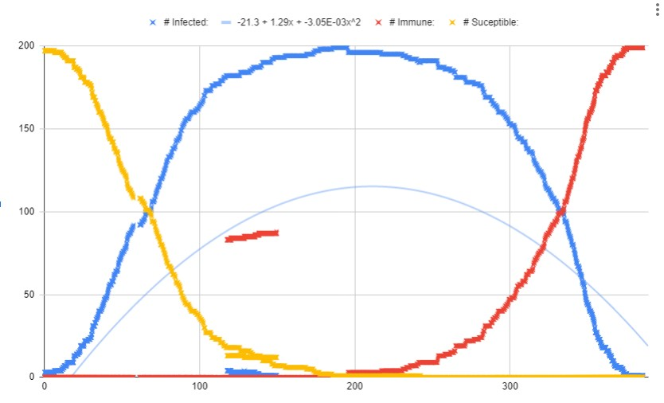
As my third update, I have debugged more of the code to prevent any 'people' from having a speed of zero. This increases randomization and enhances the simulation. I am now studying the effect each epedemic variable has on the infected curve. Since I have finally added a break statment in my program to detect simulation end, I am finally able to run larger simulations at night. In these larger simulations, the world size and number of people have been increased. A larger sample size provides better simulation results.
I will be sure to post one last post regarding the results of my larger simulations. Until then, continue shelterring in place.
Coronavirus Simulation UPDATE 2
Pandemic Simulation, April 1, 2020
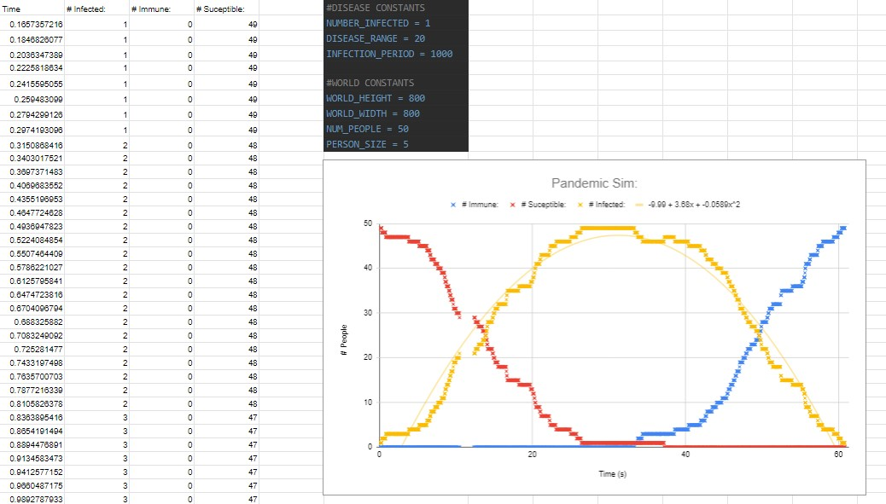
As my second update, I have debugged some of the code to correctly log the number of people infected throughout the timespan of the simulated epidemic. As things have gotten worse in the real world, the simulation has been getting better. With the new .txt file, I was able to plot the results in google sheets and was able to notice the bell shaped curve followed by many epedemics.
In the test plotted above, here are the constants I used:
- NUMBER_INFECTED = 1 person
- NUM_PEOPLE = 50 people
- DISEASE_RANGE = 20 pixels
- NFECTION_PERIOD = 1000ms
Another observation that can be made with this simulation is the general parabolic shape of the curve. Since the graph does follow a prabola, I was able to use the google sheet's trenline function and was able to determine a parabola of best fit with the power of the polynomial being 2. The function that very closely matched the points is: y = -9.99 + 3.68x + -0.0589x^2
Coronavirus Simulation UPDATE
Pandemic Simulation, March 30, 2020
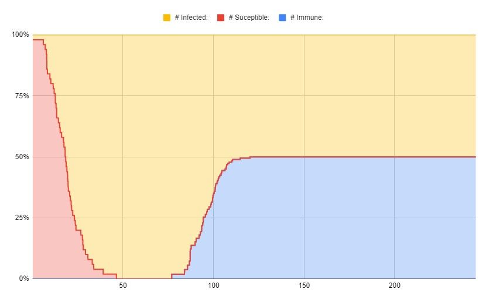
As an update to the pandemic simulation, I have made a simple simulation using python and the user interface tkinter. The current simulation uses the basics of an SIR epidemic model in which the population can be classified into 3 categories: Susceptible, Infected, and Removed (Immune after getting the virus).
The program also keeps track of the number of each population in real time. This enables data to be plotted post-run of the program. It is first saved to a file in a .txt format and can be copied into google sheets.
The image is a link to my github repository with my python code. The code is a bit unorganized at the moment, I'll be sure to add comments soon. The graph shown is the data logged from the pandemic simulation. As you can see, the number of people infected follows the shape of a bell curve. It takes 50 sec of runtime for the pandemic curve to flatten out. In my next post, I will make this graph more readable and be able to deduct more from it. Additionally, look forward for a more efficient and functional program.
Boredom at home == Coronavirus Sim
Pandemic Simulation, March 28, 2020
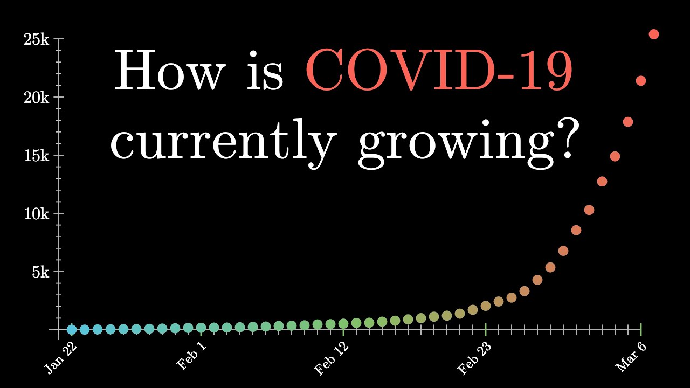
Coronavirus as of now has claimed over 30,000 lives and has now infected 664000 people (at the time I am writing this post). Since matters are not seeming to improve anytime soon, I have decided to get started in building a pandemic model using python.
I have not begun this project yet, but would like to lay down some rules/guidelines for my program. I have done a little research and have learned that there s something known as the SIR disease model. S = Susceptible Population, I = Infected Population, and R = Recovered Population. To keep things simple, I will start off omitting the R component and will later implement it into my program. This model is based off the assumption that those who have recovered from the disease/virus have developed some form of immunity, thus preventing them from getting the disease/virus again. I plan to use python to write my program and will post the project online for anyone to try. My goal is to understand how different strategies could be used to reduce the maximum number of people who have contracted the virus at any given time. Since this will be a simulation, time will be sped up and movement of each person will be randomized.
Considering that the pandemic we face today is mainly caused by the nature of the coronavirus to spread, this simulation will be somewhat applicable to the real world. Until then, stay home and continue your sanitation habits.
Welcome to my Blog
First Post, March 28, 2020
Hello, my name is Nitish and this is the first blog post I am making...
I am not too sure how often I will update these posts, but will continue to blog my feelings/reactions based on what I experience day to day + any significant worldwide/national events. I am likely going to update this section weekly, but perhaps a bit more or less depending on my workload. At the time I am posting this, I am a freshman in college sitting in my room 2 weeks into shelter in place. Stay tuned for more updates on any projects I make.
About Me
Nitish is a student engineer who is looking to work on projects in the junction of electrical, software, and aerospace engineering.
Here is a list of projects he has worked on:
- FURI Research Data Acquisition Board
- Sun Devil Rocketry Switch box
- SEDS - Rocketry Division Airbrake mechanism
- SIR Epidemic Model
- IOT Face Detection Surveillance Camera
- IOT Dorm Lock
- Gyro Stabilized Rockets Mark 1 & 2
- Arduino UAV (Flight Controllers 2.0 & 1.0)
- Camera Rocket Mark 1 & 2
- UAV Test Platform
- Eagle Project Box Libraries
- Foldable Kayak